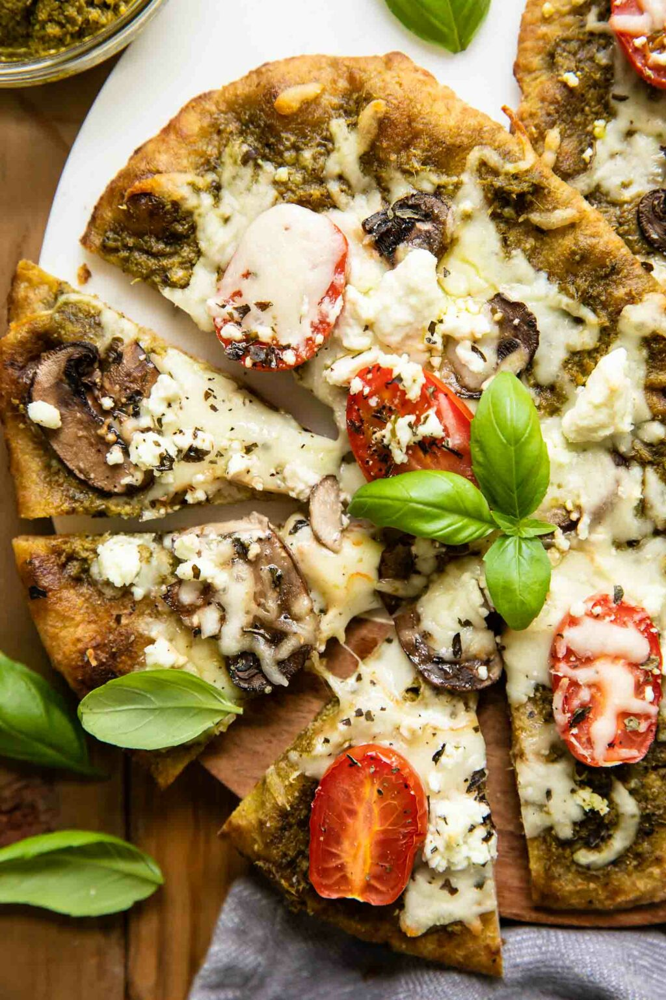

Anniversary Pizza

Image Source: Jar of Lemons
Decadent, once-a-year pizza for special occasions
Andrew and I created this pizza while spending a college summer in Washington, D.C.
We loved it then and look forward to enjoying this treat each August :)
Ingredients
- fresh pizza dough
- fresh pesto
- goat cheese
- shredded mozzarella
- colby jack cheese - cut into small cubes
- Roma tomatoes - sliced 1/4 inch thick
- caramelized onions
- olive oil
- salt & pepper
Steps
- Roll pizza dough out into a thin layer and brush with olive oil
- Spread a layer of pesto over pizza dough.
- Sprinkle goat cheese crumbles
- Place roma tomatoes and caramelized onions.
- Sprinkle mozzarella over the whole pizza and colby jack here-and-there.
- Bake 10-15 minutes or until crust begins to look golden brown.